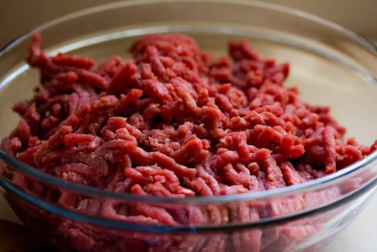

frutas Patilla Sandia mango Mango maduro limon Limones carnes Solomito Solomito Punta de anca Punta de anca Lagarto  Carne de lagato molida verduras Remolacha Remolacha Zanahoria zanahoria Cebolla Cebolla